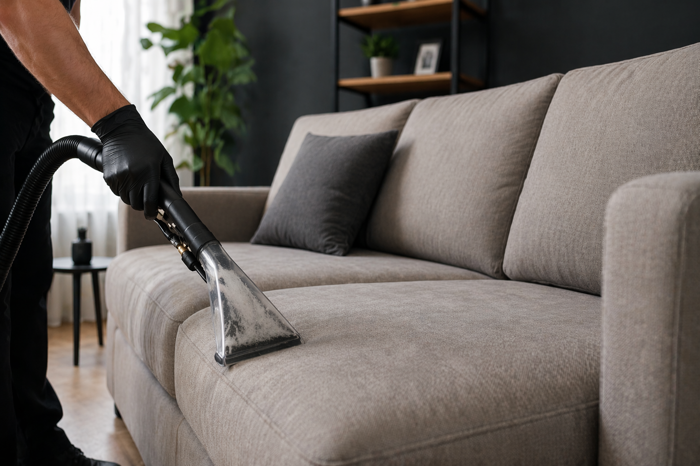

Limpieza profesional de sillones a domicilio
Recuperamos frescura, higiene y presencia en tus sillones con un proceso técnico pensado para actuar en profundidad, respetando cada tipo de tapizado y trabajando con equipamiento profesional.

Diferenciales del servicio
Un trabajo pensado para lograr profundidad, cuidado del tapizado y una terminación profesional en el propio domicilio del cliente.
Atención a domicilio
Trabajamos en el lugar, sin necesidad de traslado.
Proceso profundo
Actuamos sobre suciedad, residuos y contaminación acumulada.
Productos biodegradables
Usamos soluciones especiales según la superficie tratada.
Equipamiento profesional
Máquinas de inyección, extracción, vapor y secado controlado.
Qué incluye nuestro servicio
Cada sillón se evalúa para aplicar el procedimiento correcto según su uso, material y nivel de suciedad.
Aspirado profundo
Retiramos polvo, partículas y suciedad gruesa acumulada en la superficie y en zonas de difícil acceso.
Aplicación de productos biodegradables
Utilizamos productos especiales para aflojar la suciedad y preparar el tapizado para una limpieza más efectiva.
Cepillado según la superficie
Trabajamos con el cepillo correcto de acuerdo al tipo de tela, textura y nivel de sensibilidad del material.
Inyección y extracción
Inyectamos agua de manera controlada y extraemos residuos para lograr una limpieza profunda del tapizado.
Tratamiento con vapor
Incorporamos vapor como parte del proceso para reforzar la higiene y optimizar la terminación general del servicio.
Secado controlado con máquinas
Finalizamos con secado asistido para reducir la humedad residual y mejorar el resultado final.
Beneficios de una limpieza profesional
Más allá de lo visual, un sillón limpio mejora la experiencia de uso y eleva la imagen del ambiente.
Mejor imagen del ambiente
El sillón vuelve a verse más prolijo, cuidado y alineado con un espacio limpio y bien presentado.
Mayor higiene en profundidad
El proceso técnico permite trabajar más allá de la limpieza superficial y apuntar a residuos acumulados en el tapizado.
Cuidado según cada material
Adaptamos el trabajo a cada superficie para lograr un resultado efectivo sin aplicar métodos genéricos.
¿Querés cotizar la limpieza de tus sillones?
Escribinos y te asesoramos según el tipo de sillón, cantidad de cuerpos y estado general del tapizado para brindarte una atención clara y profesional.
Contactar por WhatsApp